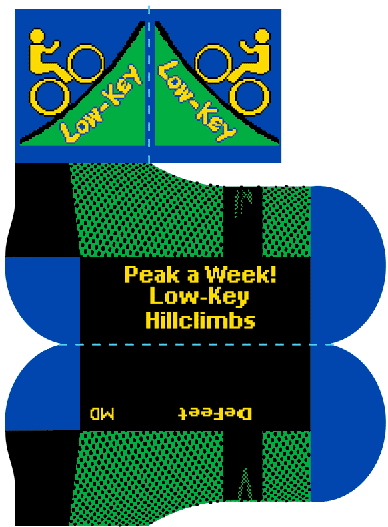

The official 2010 Low-Key socks are here!
The high-quality DeFeet Low-Key socks, like last year's cycling caps (still available in limited quantities!) are available for $10 each, or free to coordinators and chronic volunteers. Based on univariate analysis of variance (N=2) from weeks 3 and 5, it is estimated using these socks result in a loss of 7.60 points to a weekly score, but every single one of those points is worth it for the stylin' statement you're making to your fellow Low-Keyers. And the look doesn't need to end when you get off the bike. They're just the thing for making the right impression when you start that new job, for example. Invitation to a State Dinner in Washington DC? No problem: Low-Key socks are up to the task.
So find us at the next Low-Key Hillclimb and get a pair right away!